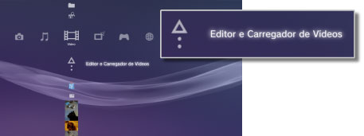
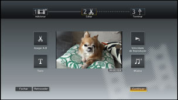

Vídeo > Edição de conteúdo de vídeo
Edição de conteúdo de vídeo
Pode editar o conteúdo de vídeo guardado no armazenamento do sistema PS3™.
1. |
Seleccione |
|---|---|
|
 |
|
2. |
Seleccione |
3. |
Seleccione |
4. |
Edite o vídeo. |
|
 |
|
5. |
Seleccione [Terminar]. |
 (Vídeo) >
(Vídeo) >  (Criar Novo Vídeo).
(Criar Novo Vídeo). (Editar), pode remover cenas específicas ou adicionar texto (ou caracteres). Siga as instruções no ecrã para concluir a operação. Pode pré-visualizar o vídeo editado seleccionando
(Editar), pode remover cenas específicas ou adicionar texto (ou caracteres). Siga as instruções no ecrã para concluir a operação. Pode pré-visualizar o vídeo editado seleccionando  .
.Notas
- Seleccionando
 (Adicionar) no passo 3, pode continuar a adicionar conteúdos e a combiná-los num único ficheiro de vídeo.
(Adicionar) no passo 3, pode continuar a adicionar conteúdos e a combiná-los num único ficheiro de vídeo. - O tempo de reprodução máximo para o conteúdo de vídeo editado é de uma hora.
- Pode adicionar até 16 itens de texto num só ecrã e até 200 itens de texto num só ficheiro de vídeo editado.
- Só pode utilizar músicas pré-gravadas como música de fundo para o seu vídeo. Músicas guardadas no armazenamento do sistema PS3™ ou em outros suportes de armazenamento não podem ser utilizadas.
Tipos de ficheiros que podem ser editados
Os seguintes tipos de ficheiros podem ser editados em  (Editor e Carregador de Vídeos).
(Editor e Carregador de Vídeos).
- Conteúdo de vídeo que tenha sido gravado no armazenamento do sistema a partir de suportes de armazenamento ou de um dispositivo de armazenamento em massa USB (versão 3.40 ou posterior do software de sistema).
- Conteúdo de vídeo que tenha sido transferido para o armazenamento do sistema a partir de um
 (Navegador de Internet) (versão 3.40 ou posterior do software de sistema).
(Navegador de Internet) (versão 3.40 ou posterior do software de sistema).
Notas
- Não é possível editar os vídeos guardados no armazenamento do sistema antes da actualização do software do sistema para a versão 3.40, os vídeos protegidos por direitos de autor e os conteúdos definidos com restrições de controlo parental.
- Deve-se tomar cuidado para não se infringir a propriedade intelectual de terceiros.